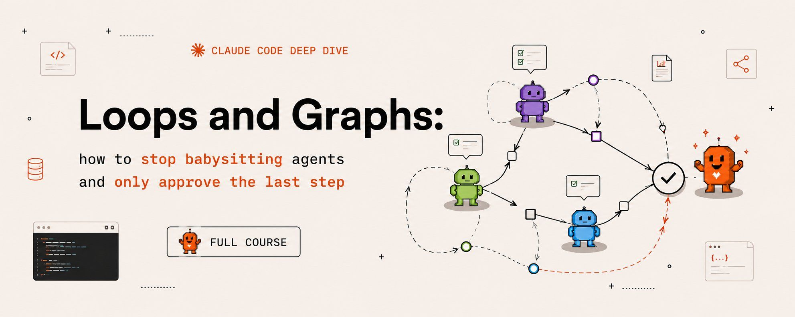
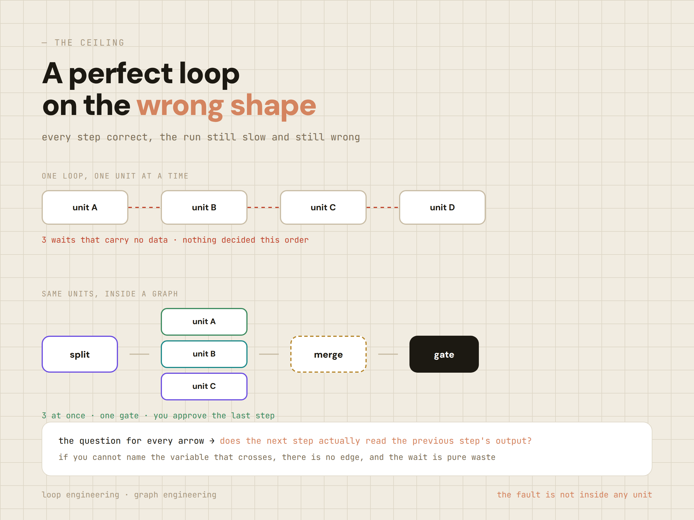
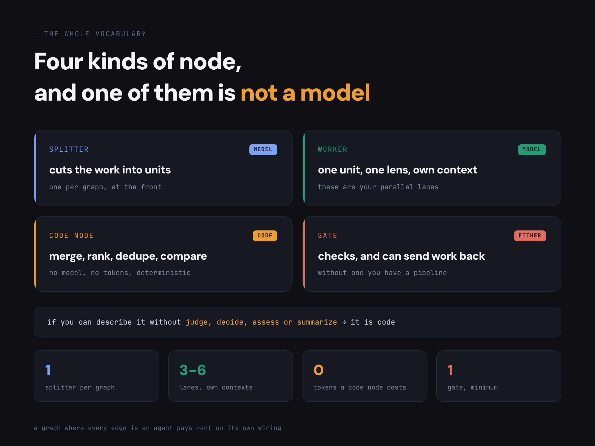
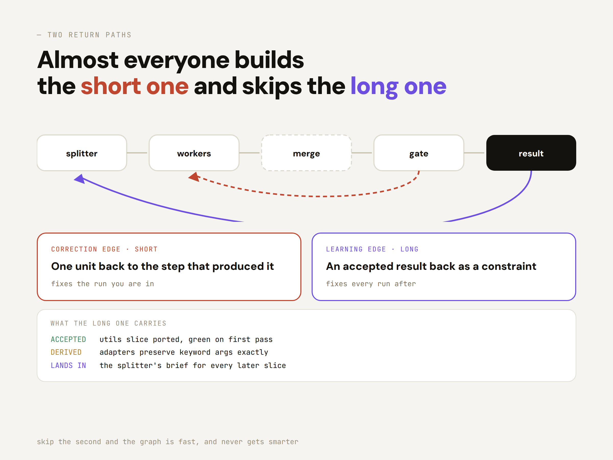
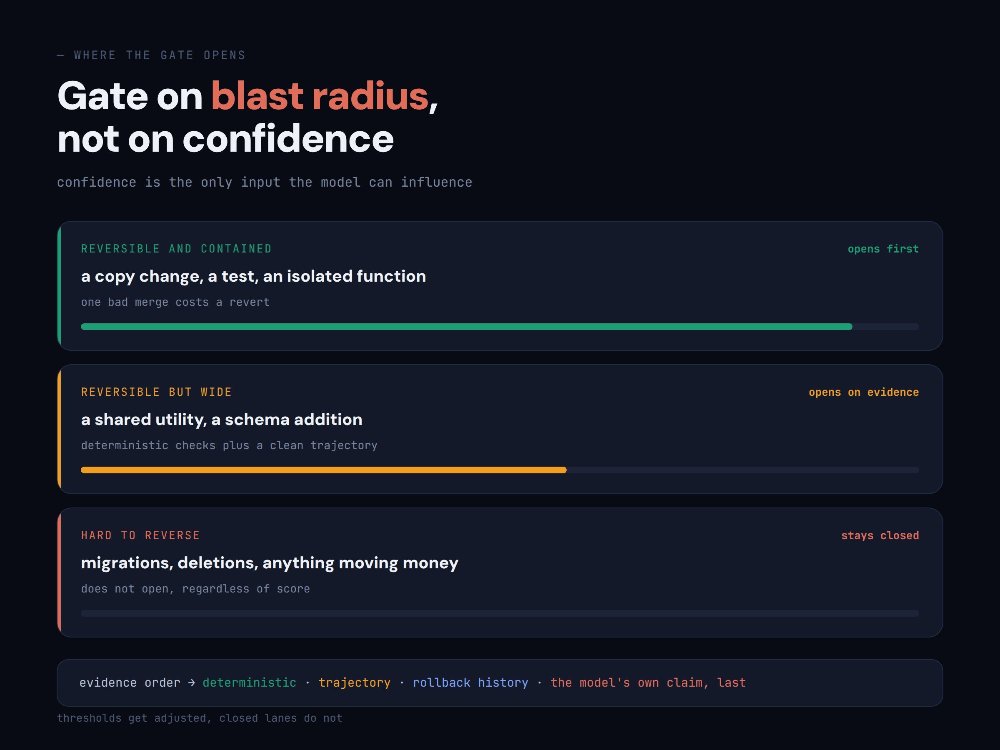

Hanako（@hanakoxbt）· X Article · 2026-08-23
Loops and Graphs: how to stop babysitting agents and only approve the last step (full course)循环与图：别再盯着每一步，只批最后一步

60 秒速览：这篇文章在说什么
译者所加，不是原文的一部分 —— 读完这 6 条，再看原文会快很多。
- 一句话结论：可靠的智能体系统 = 节点内的循环 + 节点间的图 + 两条回传路径。
- 循环的边界：循环只能让一个单元变对，决定不了有哪些单元、什么顺序、哪些能并行。
- 图的词汇：四种节点（拆分器、工作者、代码节点、闸门）与两种元素（节点、边）。
- 最容易被省掉的等待：把「然后」误当边。说不出跨过箭头的是哪个变量，就没有边，那段等待是纯浪费。
- 两条回传路径：纠正边修当前这次运行；学习边把已接受结果变成约束，写回拆分器，修之后每一次运行。
- 闸门：按影响半径分三档；置信度是模型唯一能影响的输入，所以要放在证据链最后。
常见做法：一个循环 + 一串步骤
- 所有步骤排成一条链，每步都等上一步
- 合并、去重也交给模型判断
- 失败就整批打回重做
- 用一个置信度阈值决定放不放行
- 缺少学习边，同类问题下次仍会重来
本文建议：循环套在图里
- 节点内循环到通过，节点间按依赖连边
- 能写成确定性代码的步骤用代码节点
- 只回传失败的那个工作单元，并限定修改范围
- 按影响半径分通道，难逆转的不开
- 学习边把已接受结果变成下一次的约束
左右两栏是译者按正文归纳，不是原文。
速览与对比卡是译者按正文压缩的，不是原文；正文里带虚线下划线的词可以悬停看术语卡。原文 2026-08-23 由 Hanako（@hanakoxbt）发布在 X，标题含「full course」，文末有作者自己的课程推广。
You check every step your agents take. Not because you want to, but because nothing else does.
你会检查智能体采取的每一步行动。不是因为你想这么做，而是因为没有其他机制来检查。
Getting out of that chair takes two things, and almost everyone builds only one of them.
要从那把椅子上脱身，需要两样东西，而几乎所有人都只构建了其中一样。
A loop makes a unit of work correct without you. A graph decides which units exist at all.
循环让一个工作单元无需你介入也能正确完成。图决定究竟要有哪些工作单元。
Here is the split, the mechanics that are not obvious, and the point where you approve one thing instead of everything.
下面要讲的是两者的分工、那些不那么显而易见的运作机制，以及到了什么环节，你只需批准一件事，而不必事事批准。
A loop is a check that can fail循环的核心，是能判定工作不合格的检查
循环的四件套：产出、检查、修正、重复到绿；检查必须是程序能判定的，而不是另一个模型说「看起来不错」。
Strip everything else away and a loop is four parts: produce, check, correct, repeat until green.
抛开其他一切，循环只有四个部分：产出、检查、纠正，重复直到检查通过。
The check is the whole thing.
检查就是整个循环的关键。
Without something that can fail the work while you are out of the room, you do not have a loop. You have a scheduler.
如果没有一种机制能在你不在场时判定工作不合格，那你就没有循环。你有的只是一个调度器。
This sounds obvious and almost nobody writes the check first.
这听起来显而易见，但几乎没有人会先写检查。
They build the work, then bolt a review onto the end, and the review is another model asked to look at the output.
他们先构建工作流程，再在末尾加上审查，而所谓审查，就是让另一个模型看一眼输出。
Two optimists agreeing.
两个乐观主义者达成了一致。
Write the condition first, and write it so a program could evaluate it:
先写出判定条件，而且要写成程序能够判断的形式：
附录代码（英文原文）
GREEN the test suite exits 0 GREEN every claim carries a source line GREEN the diff touches only files listed in the plan
附录代码（英文原文）
NOT A CHECK the output looks good NOT A CHECK the model says it is confident NOT A CHECK no errors were raised
That last one catches careful people. Absence of an error is not evidence of correctness.
最后那一条，连谨慎的人也会中招。没有报错，并不代表结果正确。
Build a loop on it and you get a system that confidently repeats a mistake until the budget runs out, with a clean log the whole way.
以此为基础构建循环，你得到的系统就会自信地重复同一个错误，直到预算耗尽，而日志从头到尾都没有报错。
The ceiling nobody warns you about没人提醒你的天花板
循环能让一个单元变好，但决定不了有哪些单元、它们的顺序与依赖；单元全对，整体组织方式仍可能出错，结果依然缓慢。
A loop makes one unit of work better. That is its entire job, and it is very good at it.
循环让一个工作单元做得更好。这就是它的全部职责，而它非常擅长这一点。
It cannot decide which units exist, or their order, or notice that two of the five steps never needed to wait for each other.
它无法决定要有哪些工作单元、这些工作单元的执行顺序，也无法发现五个步骤中有两个根本不需要互相等待。
So you get a very good agent running the wrong three steps, in the wrong order, one at a time.
于是，你得到了一个非常出色的智能体，却按错误的顺序，一次一步地执行着三个不该执行的步骤。
Every step is correct. The result is still slow and still wrong-shaped, and tuning the loop will not fix it, because the fault is not inside any unit.
每一步都是正确的。结果依然缓慢，工作的组织方式也依然不对，而调优循环无法解决这个问题，因为问题不在任何一个工作单元内部。
That is the moment people blame the model. It is also the moment the next layer starts paying for itself.
这时，人们就会怪罪模型。也正是在这时，下一层开始体现出自身的价值。

一个完美的循环，套在错误的形状上 上半：unit A→B→C→D 串行，三段等待不传数据；下半：实际画出 A/B/C 三个单元并行，经 merge 汇合后进入 gate；原图写 SAME UNITS，却没有画 unit D。
原文图注：Infographic: a perfect loop on the wrong shape
这张图怎么看（3 条）
- 先看上半的红色虚线：箭头之间没有数据流过，只是「然后」
- 下半绿边 A、青边 B、紫边 C 并行，左侧紫边 split 拆分，右侧赭色虚线框 merge 汇合，再进入黑色 gate
- 底部问题：每个箭头都问「下一步真的读上一步的输出吗」
一句话：单元都对，形状错了，整体依然又慢又错。
The graph is the layer above图是上面那一层
图 = 节点 + 边；边只在「下游真的读上游输出」时存在，识别假边通常能一次性省下最多的等待。
A graph is the shape of the work: what runs, what runs at the same time, what waits, what never runs at all, and where results go back.
图就是工作的组织方式：哪些要运行、哪些要同时运行、哪些要等待、哪些根本不运行，以及结果要回传到哪里。
Two things and nothing else. A node is a unit of work: one bounded job, one input in, one output out.
只有两样东西，别无其他。节点就是一个工作单元：一项边界明确的任务，一个输入进来，一个输出出去。
An edge is a dependency, this node's output feeds that node's input.
边就是依赖关系，这个节点的输出会成为那个节点的输入。
The mistake behind every unnecessary wait is treating "and then" as an edge.
每一次不必要的等待，背后的错误都是把“然后”当成了一条边。
Summarize the file and then check the weather has no edge between them. The weather does not consume the summary.
“总结文件，然后查看天气”这两个步骤之间没有边。查看天气不会用到摘要。
Those are two independent nodes that a linear script chained, and the chaining came from the order you typed them.
这是两个独立的节点，被线性脚本串在了一起，而串联的依据只是你输入它们的顺序。
So run this on every arrow in a pipeline you already have: does the next step actually read the previous step's output?
所以，检查一下现有流水线中的每一个箭头：下一步真的会读取上一步的输出吗？
If you cannot name the variable that crosses, there is no edge, and the wait is pure waste.
如果你说不出哪个变量沿着箭头传递，那就没有边，等待纯粹是在浪费时间。
Most chains have two or three arrows like that, and finding them is usually the largest single speedup available.
大多数链条中都有两三个这样的箭头，找出它们通常就能带来最大的单项提速。
The full breakdown of all five layers, in the order they matter, is here: agent-layers.vercel.app
这里按重要性顺序详细解析了全部五个层次：agent-layers.vercel.app
Four kinds of node, and one of them is not a model四种节点，其中一种不是模型
拆分器、工作者、代码节点、闸门；把能写成确定性代码的步骤交给模型，是在给布线付租金。
Splitter, worker, code node, gate. That is the whole vocabulary.
拆分器、工作者、代码节点、闸门。全部术语就这些。
The splitter cuts the work into units and sits at the front.
拆分器位于最前端，把工作切分成工作单元。
It decides more than any other node, because splitting by the wrong dimension wastes everything downstream.
它比其他任何节点都更能决定结果，因为按错误的维度拆分，会让下游的一切都白费。
Cut a repository by folder and four workers audit the same three files.
按文件夹拆分代码仓库，四个工作者就会审查同样的三个文件。
Cut by blast radius and each one sees something the others cannot.
按影响半径拆分，每个工作者就都能看到其他工作者看不到的东西。
Workers do one unit each, with one lens, in their own context. That last part gets skipped constantly.
每个工作者在各自的上下文中，从一个视角处理一个工作单元。最后这一点总是被忽略。
Give four auditors a shared window and they converge: the first writes a finding, the rest read it, and all four reports centre on the same thing.
让四个审查者共用一个上下文窗口，它们的判断就会趋同：第一个写下一项发现，其余的读到它，最后四份报告都围绕同一件事展开。
You paid four times for one opinion with three echoes.
你花了四倍的钱，买到一个观点和三声回响。
The code node is the one people forget exists. Merging, ranking, deduplicating, comparing every export before and after.
代码节点是人们常常忘记其存在的节点。合并、排序、去重、逐一比较每个导出项在变更前后的差异。
None of that is reasoning. Each has exactly one correct answer, each is a few lines of code, and running it through a model adds cost, latency and variance to a step that had none.
这些都不是推理。每一项都只有一个正确答案，用几行代码就能完成，而交给模型处理，却给原本没有这些问题的步骤增加了成本、延迟和结果波动。
If you can describe the transformation without using the words judge, decide, assess or summarize, it is code.
如果你不用“判断”“决定”“评估”或“总结”这些词，就能描述清楚某种转换，那它就该用代码完成。
A graph where every edge is an agent pays rent on its own wiring.
如果图中的每条边都是智能体，就得为它自身的连线付费。

四种节点，其中一种不是模型 图中 Splitter、Worker 标为模型节点，Code node 标为代码节点，Gate 可由模型或代码实现；底部标 1 个拆分器、3–6 条独立上下文通道、代码节点 0 token、至少 1 道闸门。
原文图注：Infographic: four kinds of node, one of them is not a model
这张图怎么看（3 条）
- 看每张卡右上角的标签：MODEL / CODE / EITHER
- 底部四个数字依次是每图 1 个拆分器、3–6 条通道、代码节点 0 token、至少 1 道闸门；3–6 来自配图，不是正文硬性规定
- 记住判据：能用 judge/decide/assess/summarize 之外的话描述，就是代码
一句话：把可用确定性代码完成的步骤交给模型，会增加成本、延迟和结果波动。
Where the loop actually lives循环到底住在哪
循环在节点内，图在节点间；两个都要，缺一个就会得到「并行产出的未验证工作」或「队列里一个很好的步骤」。
One sentence resolves the whole confusion. The loop lives inside a node. The graph lives between them.
一句话就能消除所有困惑。循环存在于节点内部。图存在于节点之间。
Inside one unit: produce, check, correct, repeat until green.
在一个工作单元内部：产出、检查、纠正，反复进行，直到检查通过。
Between units: split, fan out, merge, gate, send back. None of the second list is expressible from inside a single unit.
在工作单元之间：拆分、扇出、合并、闸门检查、退回。第二组中的任何一项，都无法从单个工作单元内部表达出来。
So you do not choose. A graph without loops in its nodes produces unverified work in parallel, which is worse than serially because there is more of it.
所以，你不必二选一。节点内部没有循环的图，会并行产出未经验证的工作成果，这比串行产出更糟，因为未经验证的成果更多了。
A loop without a graph around it is one very good step in a queue nobody designed.
没有图围绕的循环，只是一个无人设计的队列中完成得很好的一步。
The two return paths, and the one everyone skips两条回传路径，和最常被跳过的那条
纠正边短、修当前运行；学习边长、修之后每一次运行；只建前者，系统会快，但不会变聪明。
A graph without a way back is a pipeline. It produces output and forgets.
没有回传路径的图，就是一条流水线。它产出结果，然后就忘了。
Next week it starts from the same place with the same blind spots.
下周，它又会带着同样的盲点，从同样的起点开始。
Working graphs have two return paths, doing different jobs.
有效运转的图有两条回传路径，各自承担不同的任务。
The correction edge is short. A gate rejects one unit back to the step that produced it, and it fixes the run you are in.
纠正边很短。闸门将一个未通过的工作单元退回生成它的步骤，从而修正当前这次运行。
The learning edge is long. An accepted result goes back to the splitter as a constraint, and it fixes every run after.
学习边很长。一个被接受的结果会作为约束回传给拆分器，从而修正此后的每一次运行。
Almost everyone builds the first and skips the second. The tell is a system that is fast and never gets smarter.
几乎所有人都构建了第一条，却跳过了第二条。一个系统运行很快，却始终没有变聪明，就是这种情况的迹象。
The learning edge does not carry the output, it carries a constraint derived from it:
学习边传递的不是输出，而是从输出中提炼出的约束：
附录代码（英文原文）
ACCEPTED utils slice ported, green on first pass DERIVED adapters preserve keyword args exactly LANDS IN the splitter's brief for every later slice
Notice where it lands. Not in the worker's instructions, in the brief that shapes how the work gets cut.
注意它落在哪里。不是工作者的指令里，而是决定如何拆分工作的任务简报里。
A confirmed cause becomes a rule, so the next break starts where this one ended.
经确认的原因会成为规则，让下一次拆分从这次结束的地方开始。

两条回传路径，大多数人只建短的那条 纠正边从 gate 回到 workers，修复当前运行；学习边从 result 回到 splitter，把约束写进下一次拆分。
原文图注：Infographic: two return paths, almost everyone builds the short one
这张图怎么看（3 条）
- 红色虚线是短回传路径 correction edge，紫色实线是长回传路径 learning edge
- 看 learning edge 携带的三行：ACCEPTED / DERIVED / LANDS IN
- 注意它落在 splitter 的 brief，而不是 worker 的指令
一句话：没有学习边，图会很快，但永远不会变聪明。
Return the unit, not the batch回传单元，不要回传整批
整批打回会重写三个本来正确的单元，让它们也面临失败风险；回传要带 unit / verdict / reason / evidence / scope 五件套，并限制尝试次数。
This is the most expensive mistake on the return path, and it is worth stating plainly.
这是回传路径上代价最高的错误，值得直白地说清楚。
Four slices were ported. One fails its tests. If the whole batch goes back, three correct slices get rewritten.
四个切片完成了移植。其中一个未通过测试。如果把整批都退回，三个正确的切片也会被重写。
Their next version is different, not better, because nothing was wrong with them.
它们的下一个版本会有所不同，却不会更好，因为它们本来就没有问题。
Now you re-verify all four, and any of the three may fail this time for unrelated reasons.
现在你得重新验证全部四个切片，而那三个切片中的任何一个，这次都可能因为无关的原因而失败。
You converted one failure into four uncertain outcomes and paid for the privilege. Do it twice in a run and it never converges.
你把一次失败变成了四个不确定的结果，还为此付出了代价。在一次运行中这样做两次，它就永远无法收敛。
From the outside this looks like the model failing repeatedly. It is a return path destroying correct work.
从外部看，这像是模型一再失败。实际上，是回传路径在破坏正确的工作成果。
Four things travel with a return, and each is doing a job:
每次回传都附带四项内容，每一项都有各自的作用：
附录代码（英文原文）
UNIT handlers slice VERDICT red REASON test_auth_redirect failed EVIDENCE expected 302, got 200, handlers/auth.py:88 SCOPE fix this file only, do not touch other slices
The scope line matters more than it looks.
那一行范围说明，比看上去更重要。
Without it a returned unit grows: the agent opens the file, notices two adjacent issues, fixes those too, and your one-slice correction becomes a four-file diff nobody reviewed.
没有它，被退回的工作单元就会膨胀：智能体打开文件，发现两个相邻的问题，也顺手修复了，于是原本只涉及一个切片的纠正，变成了一份涉及四个文件、无人审查的 diff。
Cap it at three attempts. If a unit fails three corrections the problem is in the plan that produced it, and the loop cannot see the plan.
最多尝试三次。如果一个工作单元经过三次纠正仍然失败，问题就出在生成它的计划上，而循环看不到这个计划。
Open the gate on blast radius, not on confidence闸门按影响半径开，不按置信度开
把工作按「出错后多难逆转」分三档；置信度只能放在证据链最后，因为它是模型唯一能影响的输入。
Most write-ups build a confidence score, set a threshold, and let anything above it through. That is the wrong variable.
大多数文章的做法是构建一个置信度评分，设定一个阈值，然后让所有高于阈值的结果通过。选错了变量。
Confidence is the weakest input in that decision, for a reason that is easy to miss: it is the only one the model can influence.
置信度是这项决策中最不可靠的输入，原因很容易被忽略：它是模型唯一能够影响的输入。
The strong variable is what happens if the change is wrong. Sort work by how expensive the mistake is to undo:
真正有力的变量是：如果改动有误，会发生什么。按撤销错误的代价对工作进行分类：
Reversible and contained. A copy change, a test, an isolated function with coverage. One bad merge costs a revert, so this lane can open first.
可逆且影响范围有限。一处文案改动、一个测试、一个有测试覆盖的独立函数。一次错误的合并只需回退即可撤销，因此这条通道可以最先开放。
Reversible but wide. A shared utility, a schema addition, anything a dozen callers touch. Gate on deterministic checks plus a clean trajectory.
可逆，但影响范围广。一个共享工具函数、数据模式中的一项新增内容，或任何有十来个调用方会用到的东西。以确定性检查通过且轨迹无异常作为闸门的放行条件。
Hard to reverse. Migrations, deletions, anything writing to production data or moving money. This lane does not open, regardless of score.
难以撤销。迁移、删除，以及任何写入生产数据或转移资金的操作。无论评分多少，这条通道都不开放。
That third row is not a threshold set very high. It is a lane that does not open, and the distinction matters because thresholds get adjusted and closed lanes do not.
第三行并不是把阈值设得很高。它是一条不开放的通道，这个区别很重要，因为阈值会被调整，而关闭的通道不会。
Inside an open lane the gate reads evidence in order: deterministic results, then the trajectory of this run, then how often work from this node has been rolled back before, and the model's own assessment last.
在开放的通道内，闸门按顺序读取证据：先看确定性结果，再看本次运行的轨迹，接着看这个节点产出的工作过去被回滚的频率，最后才看模型自身的评估。

闸门按影响半径开，不按置信度开 三档：可逆且影响范围有限的先放行；可逆但影响面广的要有确定性检查与干净轨迹；难以逆转的无论分数多高都不开。
原文图注：Infographic: gate on blast radius, not on confidence
这张图怎么看（3 条）
- 看三张卡右侧的 opens first / opens on evidence / stays closed
- 按右侧 opens first / opens on evidence / stays closed 理解三档；不要从横条长度推断门槛
- 底部 evidence order：确定性结果 → 轨迹 → 回滚历史 → 模型自评（最后）
一句话：闸门按影响半径分通道，不能只凭置信度放行；模型自评应放在证据链最后。
Where to start on your own work从自己手上的活开始
先画拆分器、通道、合并、一道闸门、一条回边；先建闸门，再分通道，最后才是学习边；人只放在后果最大、最难逆转的那一步。
Take one thing you do repeatedly. Draw the splitter, the lanes, the merge, one gate, one back edge.
选一件你反复做的事。画出拆分器、各条通道、合并点、一个闸门和一条回边。
Build the gate first. Everything gets easier once something can fail loudly, and a graph without a gate is just a faster way to produce unverified output.
先构建闸门。一旦有东西能在失败时明确报错，一切都会变得更容易；没有闸门的图，只是更快地产出未经验证的结果。
Then the lanes. Then the learning edge, last, because you cannot derive constraints from accepted results until something is accepting results.
然后构建各条通道。最后再构建学习边，因为只有先有机制验收结果，才能从已验收的结果中提炼约束。
Put the human on one step, at the point of highest consequence and lowest reversibility.
让人负责其中一个步骤，放在后果最重大、可逆性最低的位置。
Approve the merge. Choose which fixes ship. Not reviewing intermediate output, not confirming each step.
批准合并。选择发布哪些修复。不是审查中间产出，也不是确认每一个步骤。
A human in the middle of a graph becomes the slowest node in it, and the graph runs exactly as fast as a person reading things.
一个人处在图的中间，就会成为其中最慢的节点，整张图的运行速度也就完全取决于这个人阅读内容的速度。
I put all five layers into a full course, twenty lessons with the templates, the configs and the order to build them in: agent-layers.vercel.app
我把全部五层内容整理成了一门完整课程，共二十节课，包含模板、配置以及构建顺序：agent-layers.vercel.app
Three lines hold the whole discipline. Measure the path, not only the answer it landed on.
三句话概括了整套实践准则。衡量整条路径，而不只是它最终得出的答案。
A verdict that does not change what runs next is a report.
一个不会改变接下来运行内容的判定，只是一份报告。
And any failure you do not turn into a permanent constraint, you will meet again.
而任何没有被你转化为永久约束的失败，你都会再次遇到。
Most people will keep tuning one loop and calling it a system.
大多数人会继续调优一个循环，并把它称为系统。
The ones who draw the graph around it will run a fleet, and never quite understand why everyone else finds it so hard to keep up.
那些围绕这个循环构建图的人，将能调度一整支智能体队伍，却始终不太明白，为什么其他人都觉得跟上步伐如此困难。
If you want the one-page version of the graph layer before anything else, DM me the word Graph.
如果你想先看图这一层的单页版介绍，请私信我“Graph”这个词。
Also follow me for more on agent internals, and subscribe to my Telegram channel:
也请关注我，了解更多智能体内部机制，并订阅我的 Telegram 频道：
补充材料
下面几块都是译者所加，用来补上原文没展开的部分。正文里的虚线链接、虚线术语、上标数字，都能悬停看卡片；这里给出完整的清单，方便你事后再回头查。
延伸阅读地图
原文 1 处正文引用，指向 1 个不同链接；另有 4 张配图未计入。按「不读会不会误解本文」分成三档：必读 / 背景 / 可选，建议顺序即卡片上标注的数字。每条都写了「不点开也能拿到的重点」，所以你可以完全不跳转地读完这篇文章。
作者的电报频道
t.me · Telegram channel
正文对应：https://t.me/+75nMf005jRpjMDU1
这是什么：作者在文末留下的 Telegram 频道邀请链接。
为什么值得点：与正文论证无关，只是作者的联系方式；本机网络不可达。
访问说明：本机直连超时（000），Telegram 在部分网络不可达；不点不影响阅读。
不点开也能拿到的重点
一条频道邀请，没有额外论证内容。
术语表
正文里带虚线底线的词，悬停即出解释；这里是完整 14 条，可当速查用。
让同一个工作单元反复「产出—检查—修正」直到通过的结构。它保证一个单元做对，但不决定有哪些单元。
用节点和边描述工作形状：哪些先跑、哪些能并行、哪些要等、结果往哪流。它决定「做哪些事、以什么顺序」。
图里的一个工作单元：一个有边界的任务，一份输入进、一份输出出。可以是模型、代码，也可以是一道闸门。
两个节点之间的依赖：前一个的输出真的被后一个读取，才叫边。仅仅「先写这一行、再写下一行」不构成边。
检查结果并决定放行还是打回的节点。没有闸门，图就只是一条更快的流水线，产出的东西没人验证。
图最前面的节点：决定把工作切成哪些单元。切错维度，后面所有节点都在为这个错误买单。
执行单个单元的节点，一个单元、一个视角、一份独立上下文。共享上下文会让多个工作者收敛成同一个意见。
用确定性代码完成合并、排序、去重、对比的节点。能用代码说清且只有一个正确答案的事，不该交给模型。
可独立检查、独立打回、独立重做的一小块工作。回传时按单元回传，不要把整批打回。
一次改动出错后会波及多大范围。闸门按影响半径分通道，而不是按模型的置信度分。
短回边：闸门把一个不合格的单元打回给产出它的步骤，只修复当前这一次运行。
长回边：把已接受结果里提炼出的约束送回拆分器，让之后每一次运行都带着这条经验。
失败或验收结果从下游回到上游的路线。没有回传路径的图只是流水线：产出、忘记、下周重犯。
一次运行里模型与工具交互的完整过程记录，不只是最终答案。闸门会读轨迹，判断这次是怎么做出来的。
译者注
正文中上标数字对应这里，解释的是「直译会看不懂」或「原文本身含糊」的地方。
循环与图不是二选一
循环在节点内，图在节点间。图里的节点仍然可以各自带循环；缺了图，循环只是「队列里一个很好的步骤」。
unit 与 batch
文章反复强调回传单位是 unit 而不是 batch。整批打回会把三个本来正确的单元改成「不一样」，一次失败变成四个不确定结果。
blast radius 译作「影响半径」
这里指一次改动出错后的波及范围；判定时要结合撤销这次错误的代价。
学习边落在拆分器
它不修改工作者的指令，而是修改「怎么切活」的 brief。这是全文最容易被读漏的一处：经验要作用在规划层，而不是执行层。
置信度为什么不能当主变量
因为置信度是决策里唯一由模型自己产生、自己就能影响的输入。先看确定性结果，再看这次运行的轨迹与回滚历史，最后才看模型自评。
课程链接不是论证
文中两次出现 agent-layers.vercel.app，是作者自己的五层课程推广；它不构成论点证据，本页保留原链接但不为它背书。
原文写「四项」，下面却列了五项
正文说 Four things travel with a return，但代码框里实际是 UNIT、VERDICT、REASON、EVIDENCE、SCOPE 五行。英文照录、数字不改；读者按五项理解即可。